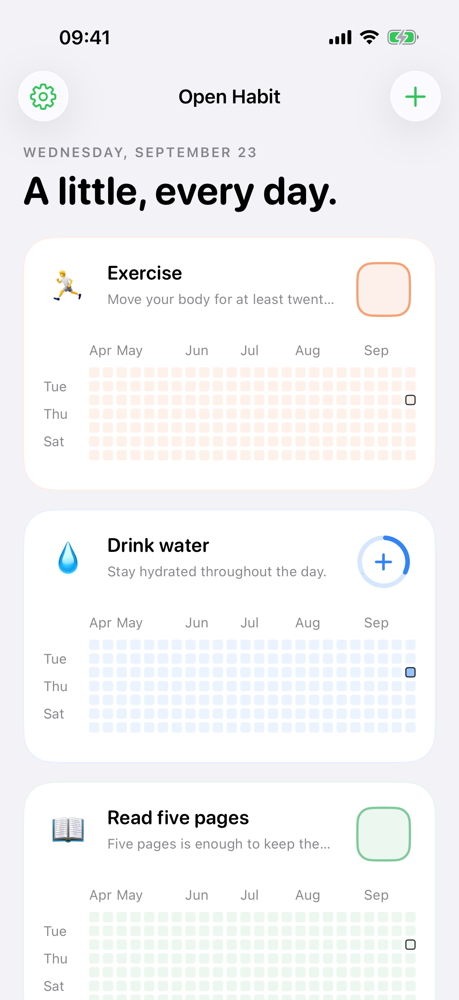
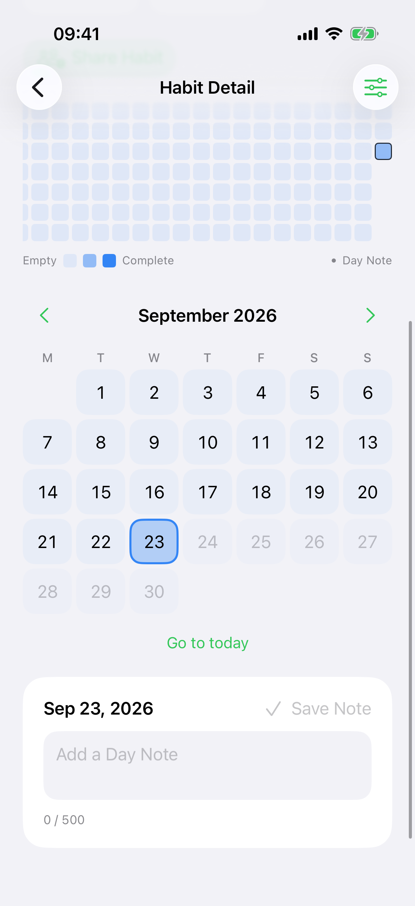

Every personal tracking flow works without a network connection.
Free and open source for iPhone and iPad
A little,
every day.
A private habit tracker built for quick check-ins from your Home Screen, Shortcuts, or the app.
- No subscription
- No ads or analytics
- Works offline
Private by designLocal first. Your iCloud.
01Track anywhere
02Keep your context
03Own your data
Less friction
Make the check-in the easy part.
Tap once from an interactive widget, run a Shortcut, or open the app. Every action saves locally first, so progress never waits for a connection.
One-, three-, and six-Habit widgetsAdd, remove, read progress, and set Day Notes with ShortcutsDaily Targets from 1 to 99


Progress with context
See the pattern. Keep the story.
Create Habits with an emoji, color, Daily Target, and optional daily or weekly Streak Goal. A rolling year shows the rhythm, while the calendar lets you correct any past day. Add a private Day Note when the reason matters as much as the count.
Empty days stay empty. Open Habit never labels them failed, missed, or overdue.
Private by design
Your habits are not our business.
No Open Habit account. No advertising. No analytics. No tracking SDKs or developer-operated user-data service.
iPhone
↔Private
iCloud
↔iCloud
iPad
Your devices synchronize through your private iCloud database when iCloud is available.
Exported JSON is your portable backup. iCloud synchronization is not version history.
Yours to keep
Your data stays portable.
Export a complete Open Habit JSON backup and restore it later. Import supported HabitKit version 2 exports. Local recovery backups are created before replacement, import, and deletion, and Settings lets you delete all app data.
JSONComplete export and restore
HKHabitKit v2 import
↶Local recovery backups
⌫Delete all data
Open source
Free in every sense that matters.
Open Habit is free to download and use, with no subscription, ads, or in-app purchases. Inspect, build, contribute to, or fork the source under the MIT license.
MITPermissive open-source license
$0Free to download and use
0Ads and tracking SDKs
∞Your data, portable
The clear answers
Good to know.
Does Open Habit require an account?
No Open Habit account is required. An Apple Account is needed only for iCloud synchronization and Shared Habits.
Where is my data stored?
On your devices and, when iCloud is available, in your private iCloud database. The developer does not receive your Habit data through the app.
Does tracking work offline?
Yes. Changes save locally first and synchronize later when iCloud becomes available.
Is iCloud sync a backup?
It can help restore data after reinstalling, but edits and deletions also synchronize. Export JSON when you want a backup file you control.
Which devices are supported?
Version 1.0 supports iPhone and iPad on iOS and iPadOS 17 or later. Shared Habit invitations require version 18 or later.
Is there an Android, Apple Watch, Mac, or web app?
Not currently. Version 1.0 is for iPhone and iPad.
Small steps. Your own pace.